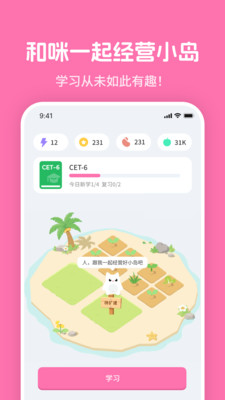

MiMu 进化史：一张单词卡怎么长出了五条悟和小岛养成
从纯工具到 AI 角色陪练加小岛经营，MiMu 的迭代路线其实一直围绕同一个命题——怎么让背单词这件事不那么难熬。
现在这版是什么样
我最近打开 MiMu 的第一反应是：这东西跟我三年前第一次装的时候已经不是同一个产品了——它的官网上现在主打的就是 AI 角色陪练和小岛养成这两张牌。
那时候从官方下载装下来，它就是个背单词工具——词书选一本，每天给你推几十张卡片，点认识或不认识，生词本自动收，复习按记忆曲线排。干净，朴素，跟市面上百词斩、墨墨背单词那堆竞争者看起来没什么本质区别。
现在你再打开它，首页先跳出来的是你养的那座小岛——上面有建筑、有装饰、有你背词攒出来的「能量」在流动。点进背词模块，每张卡片背后是 AI 角色可以跟你对话的入口。角色库里排着五条悟、宿傩、病娇学弟这些人，不是选个语音包那么简单——是真的能跟他们说英语，练口语，甚至闲聊。

一个背单词 App 长成了这样，中间发生了什么？
来路：从单词卡到 AI 伙伴
样本里的MiMu文档没有给出版本号的完整时间轴，但从产品结构的层次反推，迭代顺序大致是这样的：
第一阶段：背词工具打底。 这是所有同类产品的起点。词书、卡片、生词本、复习计划、每日打卡——这套基础骨架 MiMu 没有跳过，而且做得不功不过。免费层能完整跑通这条主线，说明团队从一开始就没打算把核心功能锁进付费墙里。
第二阶段：AI 角色进场。 这是 MiMu 跟竞品拉开差距的转折点。不是加个语音朗读那么浅——是做了 MJG（MiMu 陪练伙伴）这个概念，让 AI 角色能跟用户进行开放式的英语对话。角色阵容走的是二次元「你推」路线，五条悟、宿傩这些 IP 角色一上来就抓住了年轻用户。
这一步加得不简单。AI 对话需要能量体系来控制额度——免费用户有限额，会员放开。于是能量礼包、会员订阅这些商业化模块跟着搭起来。文档里提到的 App Store 三档会员（28/78/268）和能量礼包（6/18/88），就是这个阶段的产物。
第三阶段：养成玩法套进来。 小岛经营是后来加的。背词攒能量，能量用来建设小岛，小岛反过来给你提供持续打开 App 的动力——这是一个闭环的游戏化设计。打卡热力图、学习数据统计这些激励机制也在这一阶段完善起来，整个产品从「用一下」变成了「每天回来看看」。
第四阶段：AI 提效收束。 最新的迭代重心似乎在 AI 定制学习计划上。官方叫「AI 为你量身打造科学的学习计划」——根据你的答题表现自动安排每日新学与复习量。这一步把前面散的东西收了个口：词书有了、角色有了、养成有了，现在用 AI 把学习节奏本身也接管了。
文档里的版本差异页没给具体版本号，但 16+ 分级的标注本身就是一个侧面证据——AI 角色对话的开放性让 App Store 把它标成了 16+，说明这个功能已经不是边角料，是产品核心形态的一部分。
迭代规律：团队一直在死磕什么
从这几步能看出来，MiMu 的团队一直在死磕一个命题：怎么让背单词这件事不那么难熬。
传统背词工具的天花板就在这里——效率可能很高，但体验就是枯燥。墨墨背单词靠记忆曲线算法打天下，百词斩靠图片联想降低门槛，Anki 靠自制卡片社区留存用户——每家的解法不一样，但都在「减轻枯燥感」这个方向上发力。
MiMu 的解法是把「背词」从主线降级成一个底层动作，用「跟 AI 角色聊天」和「经营小岛」这两件事把用户留在 App 里。背卡变成了攒能量的手段，而不是目的本身。这是一种很聪明的产品哲学——用户可能不会为了「背单词」打开 App，但会为了「今天还没跟五条悟聊两句」或者「小岛里的新建筑还差一点能量」打开它。
同时你也能看到他们什么一直没碰。词书体系没有搞太大的差异化——就是常规的四六级、雅思托福、考研那些。没有做社区（用户之间的交流），没有做直播课，没有做家长管控（16+ 分级反而说明他们在刻意避开低龄用户）。团队的资源一直集中在「AI 角色」和「游戏化闭环」这两条线上，没有四处开花。
这个优先级判断从商业化上也能印证——会员的核心卖点就是 AI 对话额度和角色功能，而不是词书或者额外课程。¥28 月费、¥268 年费的定价结构，也是围绕「你愿不愿意为跟 AI 角色多聊几句付钱」这个假设来设计的。
预判：下一步大概率走向哪里
从迭代规律推的，不当官方口径传。
第一个可能：AI 角色的深度会继续加。 现在的对话已经能走场景练习（雅思口语陪练、日常对话场景），但角色本身还是相对固定的设定。下一步可能往「角色有成长线」或者「用户可以训练自己的角色」方向走——你跟五条悟聊得越多，他对你的说话方式越熟悉，对话越自然。
第二个可能：养成玩法会跟背词主线绑得更紧。 现在小岛经营还是个相对独立的模块，能量是背词和小岛之间的唯一接口。以后可能出现「跟特定角色对话解锁特定建筑」「完成某个学习目标解锁小岛剧情」这类更深的联动，让背词、角色、养成三者真正变成一件事。
第三个可能：AI 学习计划会变成核心差异化。 现在「AI 提效」还是个辅助功能，用户可以选也可以不选。但如果 AI 计划的效果确实比手动安排好，它会逐渐变成默认入口——用户打开 App 不是选今天背哪些词，而是看 AI 给你安排了什么。这一步如果走通，MiMu 的产品形态就真的跟传统背词工具没有任何相似之处了。
当然也有他们可能一直不会碰的东西——低龄市场、纯工具用户、重社区形态。从 16+ 分级的选择来看，团队对自己的目标用户画像很清晰：备考的大学生、年轻的二次元爱好者、愿意为「有趣」付费的人。这个画像不扩，产品的边界就不会乱。
写在最后
从一张单词卡到跟五条悟聊英语、养一座小岛，MiMu 的进化路线其实没有那么复杂——就是把「背单词」这件事往「用户每天愿意打开」的方向推了一步又一步。每一步加的东西看起来都不太一样：先是 AI，然后是养成，然后是 AI 计划——但底层逻辑一直没变：别让背词本身成为用户离开的理由。
这套资料我在三个地方都放了备份，GitHub上有一份主仓库，Gitee和GitCode各存一份镜像，方便不同网络环境下查阅。